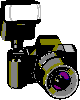
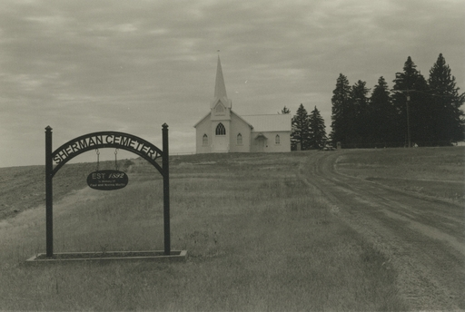

Analog photography is a major hobby of mine!
Here's where I'll showcase some of my work, email me with any inquiries if you'd like to purchase prints.
Also feel free to download any photos you like here free of charge, each small photo links to a full-resolution version.

(The Sherman Cemetery in Sherman, WA, outside Wilbur, WA. Shot with my Nikon FM2 on Fomapan 400 and printed on Fomatone 133 paper.)
Current Galleries
Soviet Seattle
My Equipment:
35mm
- Nikon FM2 with 50mm f/1.8 AF Nikkor lens - My father's old camera, an absolute joy to work with, most of my 35mm work came from this camera
- Canon A-1 - My first camera, gifted to me by a good friend several years ago
6x6
- Iskra - A Soviet folding 6x6 rangefinder that broke after taking an unfortunate fall! All of my 6x6 work came from this prior to it breaking
- Pentacon Six - A brand new addition but quickly becoming a new favorite of mine
6x9
- Kodak No. 1 Jr. - The oldest camera I own and use, dating back to c. 1914
4x5
- Gibellini Proxima 4x5 - An entry level 4x5 I bought to test the large format waters... turns out I love large format
Scanner
I use an Agfa SnapScan 1212u to scan my prints. I'm much more interested in darkroom printing than I am in scanning, and this gives me acceptable results for sharing here


{kind=link}